The consensus step is synthesis, not concatenation
Agreements reinforce confidence; disagreements surface real tradeoffs
Review Flow
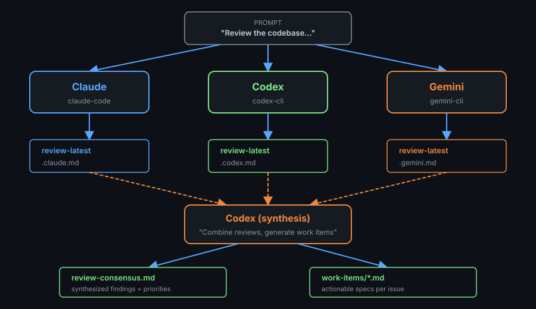
Three agents review independently, then synthesize into consensus + work items
Review prompt - stored
…Look at the separation of modules and the general layout. Look for bad code smells, or things that will make it harder for multiple agents to work on the codebase. Do a thorough review. Look for testing holes, and for code that is not clean or easy to maintain. Look for opportunities to separate concerns and make things modular…
Markdown Kanban
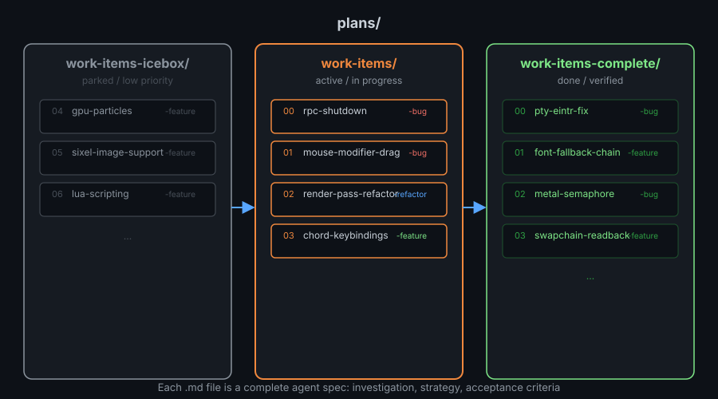
Work items as a three-column kanban: icebox, active, complete
Human in the Loop
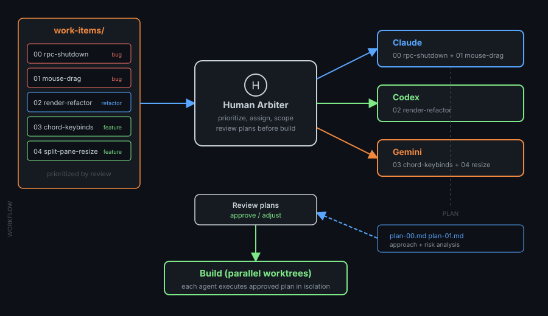
Human arbiter assigns work items to agents, reviews plans, then approves parallel builds
Obsidian Kanban
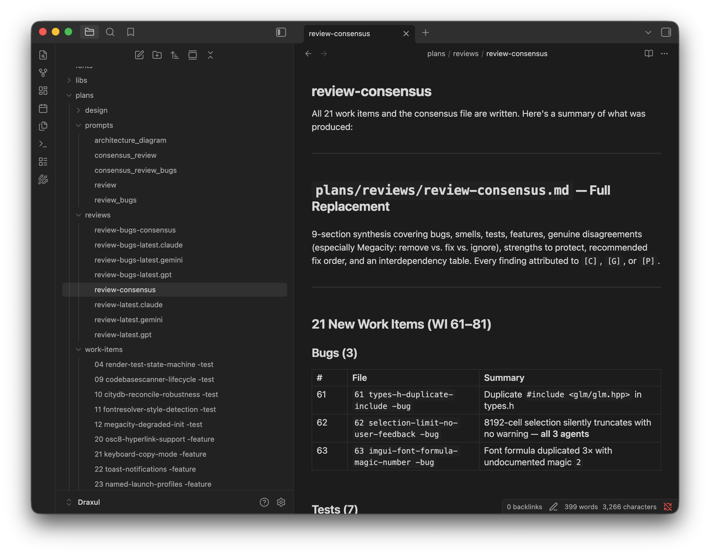
Obsidian
Parallel Agents via Worktrees
# Each agent gets an isolated git worktreeAgent(isolation:"worktree", prompt: "Fix the PTY EINTR bug...")Agent(isolation:"worktree", prompt: "Refactor render passes...")Agent(isolation:"worktree", prompt: "Add chord keybindings...")
Each agent works on an isolated copy of the repo
No conflicts during execution
A full context window per agent
The integrating agent merges all diffs with full context
Even overlapping changes can be reconciled intelligently
The Project - Draxul 🩸
(I’m crap at names - but crap names have available domains)
At first - a replacement for nvim-qt
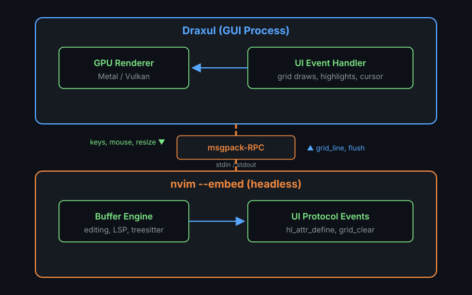
Neovim embedded UI architecture
SDL3 + GPU Rendering
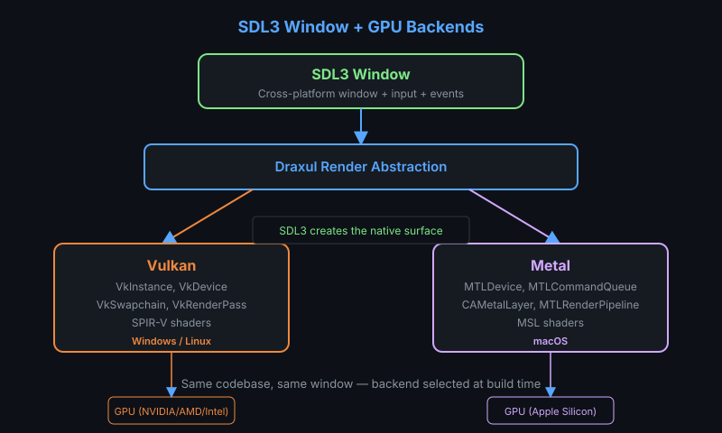
SDL3 window with Vulkan and Metal backends
The working version
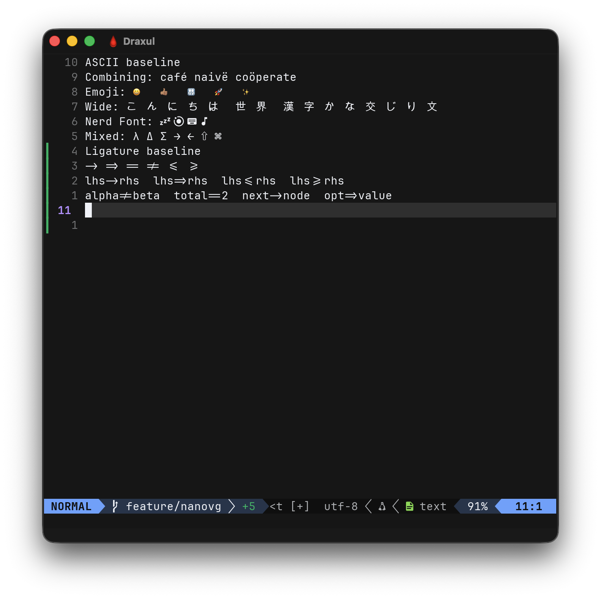
Neovim
Getting Ambitious
ConPTY, PTY
Windows, Mac, Linux
Powershell, Cmd, Bash, WSL, ZSH
Ghostty/tmux/iTerm/Win Terminal
Splits and Tabs
Review/Fix/Refactor/Feature
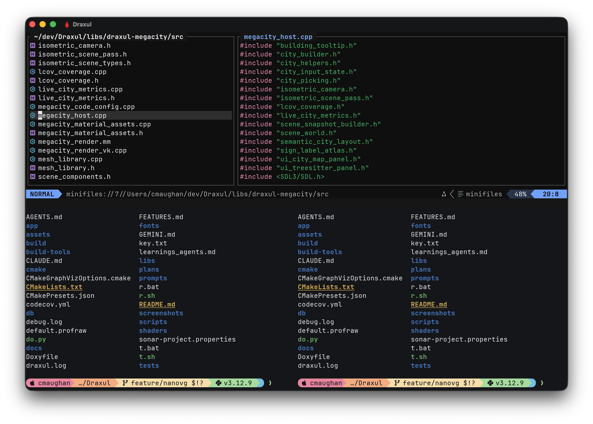
Mac ZSH, NeoVim
Managing Complexity
By this point I was more interested in the orchestration problem than the app I was building…
Mega City Code : A Complexity Metaphor
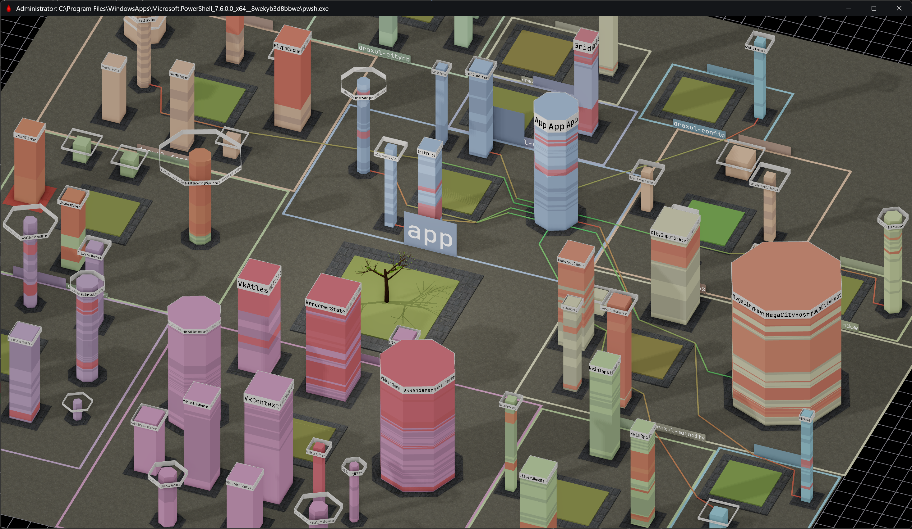
An old idea who’s time may have come https://wettel.github.io/download/Wettel08b-wasdett.pdf
Mega City Code
An extra 1-2 weeks to add the city(!)
Metal & Vulkan, Mac, PC (Linux…)
Treesitter, SQLite DB
A high-end game engine:
HDR pipe, AA, Tone Mapped
Point and CSM shadows
Ambient Occlusion
Forward+ (ish)
A* path finding
Programmer/Procedural/Free art ;)
VR one day?
ImGui
Tweakables
Hook up every parameter to UI, config
Visualize everything
Debug Scenes, performance checks, etc.
Essential for graphics
ImGui
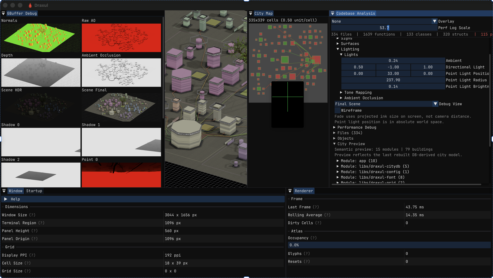
App Connections
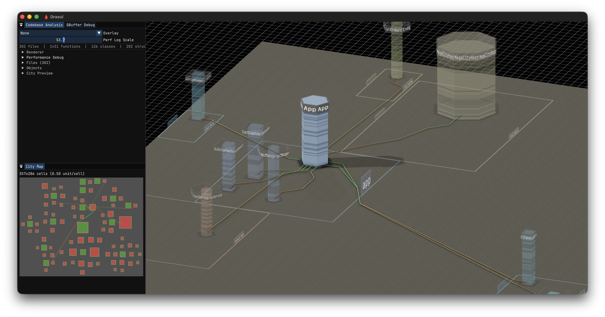
Live Perf
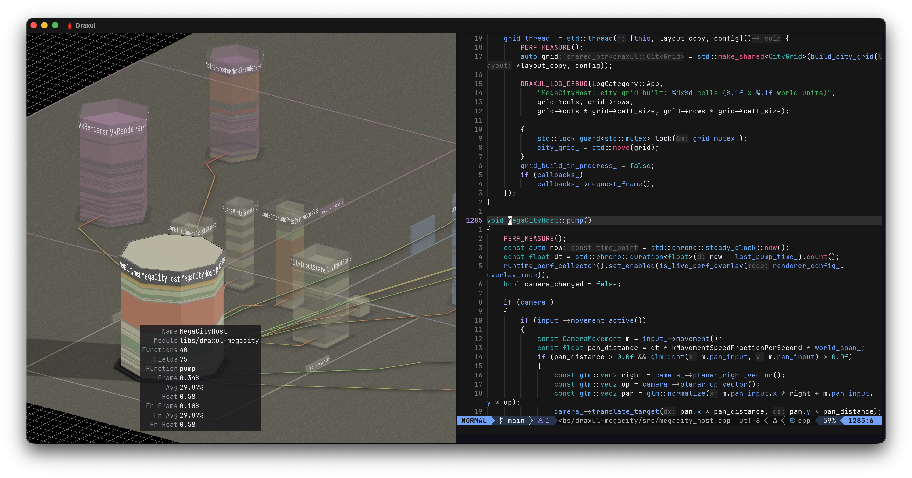
Tooltip Traces
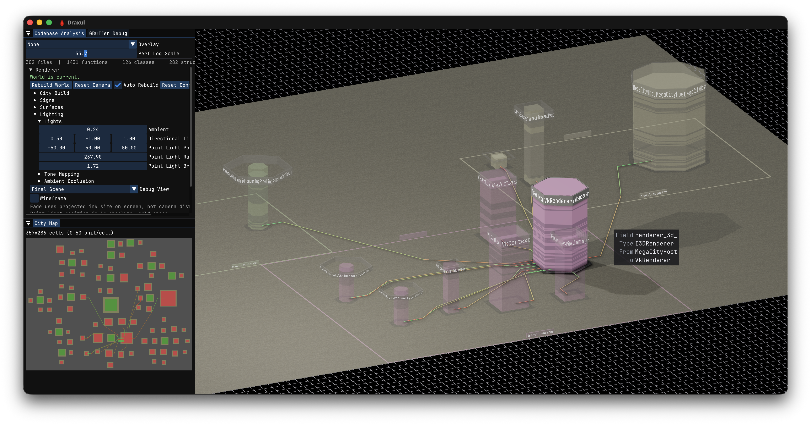
Multi-Host Split Panes
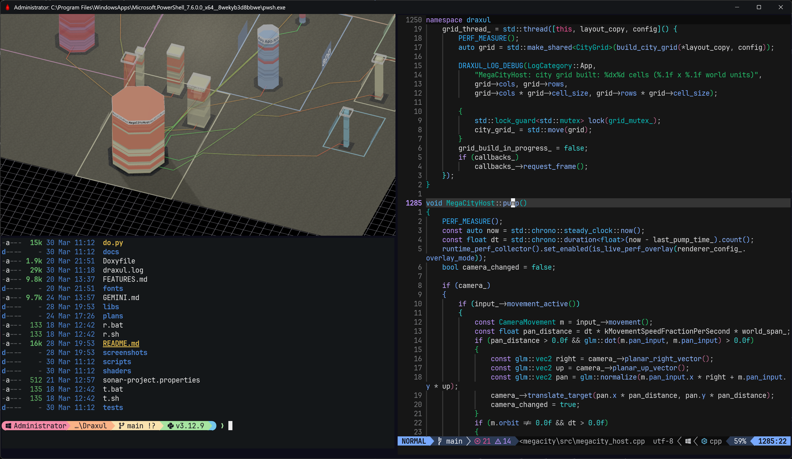
Coverage Overlay
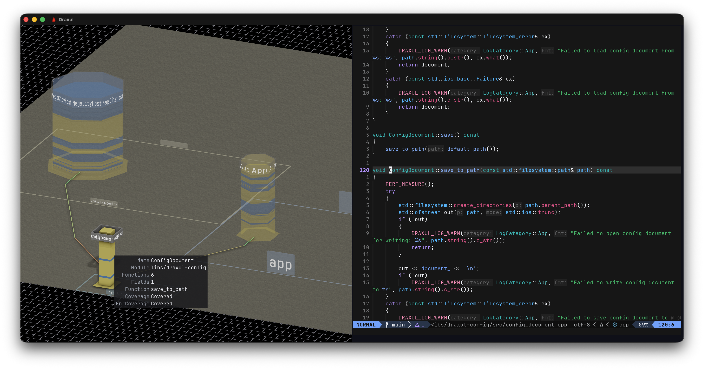
LCOV coverage imported from CI, Yellow = Covered
We are all 100x developers
3 part time weeks == 3 full time years
As new tools, orchestration software and better agents arrive, this trend will increase
Dark Factory is inevitable for many software shops
Test the product not the contents
Build it, throw it away, do something new (that’s Monday…)
Real Costs (not existential ones…)
Claude £100/Month
Codex £20/Month (with a promotional quota reset)
Gemini Free (code reviews, a bit of dev)
A Mac Mini (not necessary)
So this whole project ~£100
Who knows how pricing will shake out?
The time to build is now
Various Learnings
Today’s agents are not yesterday’s…
Forget CoPilot
Codex 5.4 (/effort default/xtreme?)
Claude Opus (effort auto/max/high?)
Gemini (?)
Personal Opinion
Codex 5.4 is a better programmer (but only just)
Claude Opus is better at big picture stuff
Claude has a better personality
Gemini is good, but slow
The Codex app is very good
OpenAI are cranking right now
Don’t wish for it, just ask
If you can think it, AI can do it.
A common refrain: “Have you asked Codex?… doh!”
Anything is possible
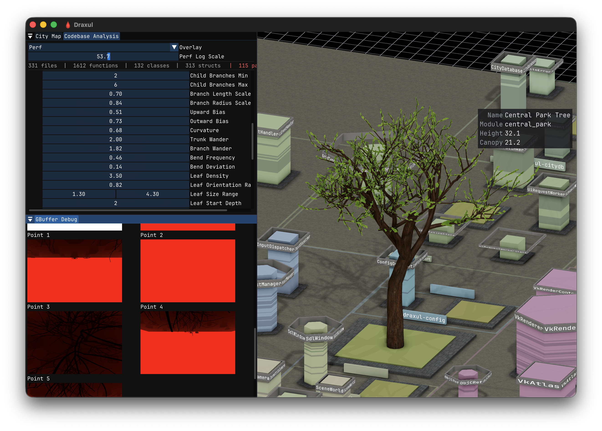
Onboard the Agents
Prime the context window
/init
Skills can help
Sub folder agent files
Markdown…
Markdown everything
Plans
Prompts
Kanban/Work
Documentation
Diagrams
Skills are just markdown files…
Agents.md, Claude.md, Gemini.md
Learnings.md
This-thing-I-worked/decided/created/thought.md
Agent: reconcile these files…
Build tools first
Help the agent ‘see’; whatever that means for you
Nail down the build, test cycle
Validate everything you can automatically
Never ask the agent to change something
Make it a UI button/editor instead.
Bake the ‘Debug Dashboard’ in
CI/Github is no longer hard
Python is your friend
Make a scripts folder
Never do anything twice
Tokens aren’t cheap: Python scripts are free
I have a central ‘do.py’ that can do anything
Context window
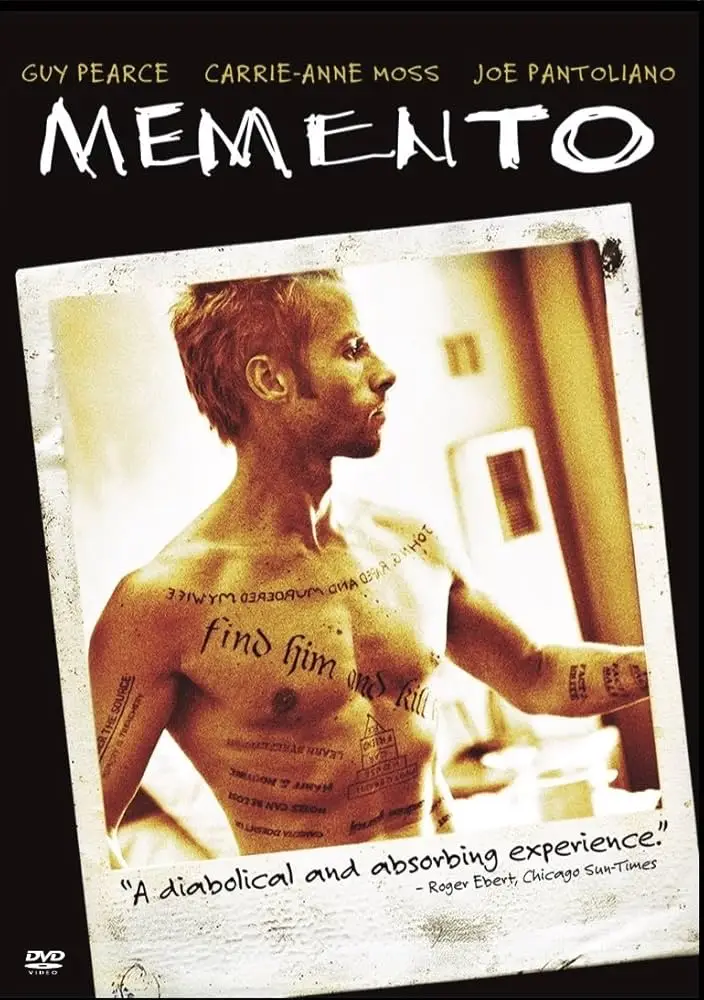
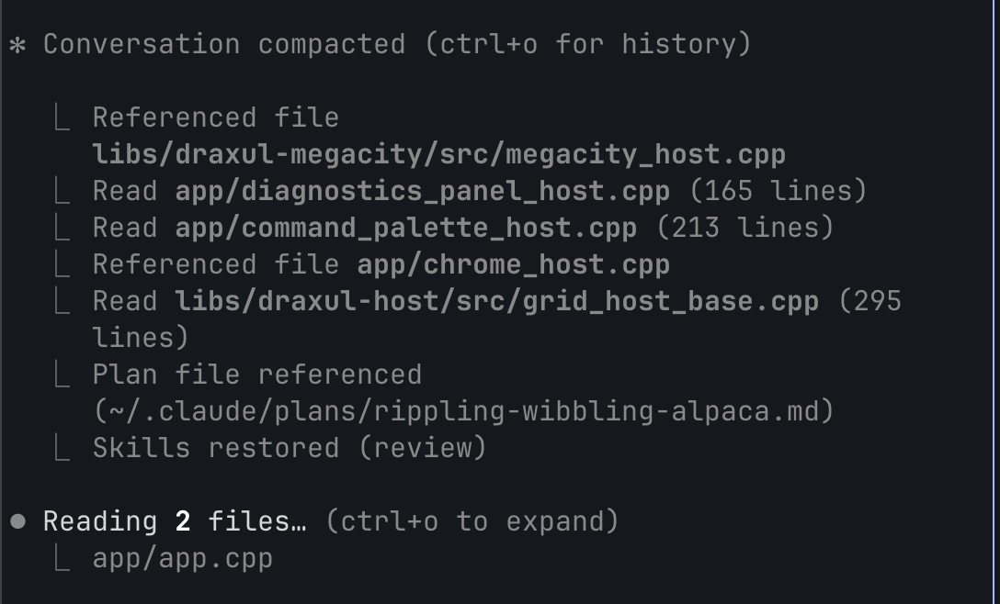
Context window
Don’t worry about compaction
Optimised by the AI companies
Clear it for new tasks
I rarely manage it
Bigger not necessarily better
The Agent is your best teacher
It will explain the code to you
This is the best way to find code smells
Talk to it and you’ll often catch it out
Some coding decisions are pragmatic instead of correct
Watch it work; you often see these go past
It’s a fun game: “How does this really work?”
Code Management
I rarely look at code
I want the ‘big picture’
I look at outcomes, inputs, tests
Never go back; never revert
Human effort level == Task effort level
Easy jobs: “Go do it…”
Medium jobs: “What would you do here…? Fine, do it”
Hard jobs: “Plan this, write a work item, lets discuss, etc.”
Challenges
Easy to get lost
Different machines, agents, branches
Untested big features?!
The agent is pragmatic
You set the direction
It will lie by omission about what’s done
Agent only compiles/tests on the host machine
My 2 line change…
Specific Challenges
The renderer was not ‘optimal’
Single buffered
One big draw batch
Too much state
The hierarchy of the windows was weird
Agent did what was easy, not elegant
Agent can make a AAA game engine
…but has trouble drawing a button
Challenges
Token anxiety is a thing
Existential threat
We are more aware
The 5 hour window is annoying
‘Insert your credit card here’
Prioritise sleep/health
Claude mobile is the devil incarnate
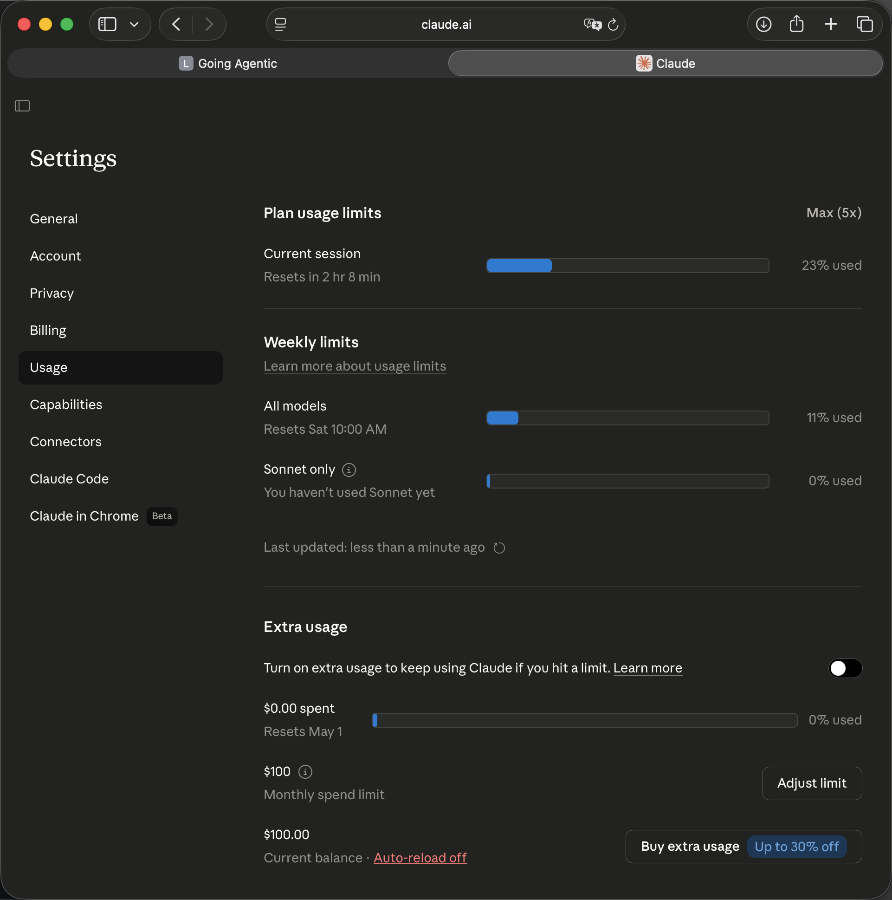
Build what you know
It is much easier
Hard to know if a thing is right if you never did it yourself
My previous experience: 3D hardware engineer, live coding projects, text editors, neovim, treesitter, sqlite3